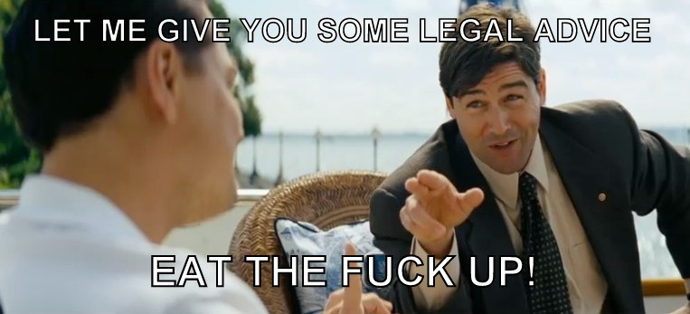

The Wolf Of Swole Street – Your Guide To Swolecity
Contact Us
The Case Against Working Out
Why You ‘Should’nt Work Out
The title ain’t click-bait, I don’t think you should workout! I don’t think anyone “should” work out. As long as you feel like you ‘should’ workout, I don’t want you to work out. I want you to wait, wait for as long as you feel that you should work out. Then one fine day, when you feel like you had it enough and ‘want to’ work out, you have my permission to start. Ask any expert health coach or any person in general and they’ll tell you that you ‘should’ in fact, work out. Everyone should. It could be considered common sense, cuz we weren’t designed to sit idly and wait for our demise. But I’d still go with the unpopular opinion and say that you ‘should’nt workout. The word ‘Should’ implies our cultures and societies expectations of us and how we should be and what we should be doing. The word Should is often used when one person (who feels morally superior) tells the other person to do something, that he feels is the right thing for him. I can’t help but feel that the pressure the word ‘should’ puts on somebody takes them farther away from the intended direction. I admit, I maybe wrong, but I believe this conversation has to be had. Ask yourself, how many times have you been told that you need to look a certain way and do a certain thing?
Prochaska in his Transtheoretical model of change, conceptualized the five stages of intentional behavior change and it explains how one’s behavior changes over a wide spectrum of behaviors.For fitness, It progresses from the I don’t give a fuck (precontemplation) stage to Yea, I think I have to do something about it (contemplation) stage and eventually leads you to the maintenance stage. The problem is, the ‘you should work out’ message is thrown at people who are in the precontemplation and contemplation stages and people in the precontemplation stage, don’t give a two shit flying fuck about working out and those that are in the contemplation stage are still thinking about it. When some gooroo tells a person in these stages that they should work out, they not only make them defensive, but also makes them feel guilty.I hope you have enough experience to realize how guilt tripping someone into complying plays out in the long run.
In my personal life, I’m at the intersection of the first two stages and if someone tells me that I should workout, I respectfully tell them to Go fuck themselves. With all due respect of course. Yea, anyone can relapse back into any previous stage. And I’m betting my money on most normal people feeling the same way too.I rest my case. Share your thoughts if you feel otherwise, share this with your friends if you’re worried they keep hearing the “You should workout” advice.
Whose fault is it if you quit?
Even with the little life experience under my belt, I have given up on my health and many other things, more times than I can comfortably admit. In just the last one year, I would have given up going to the gym, more than four times. With a rough estimate, I would say that I have stopped going to the gym a good 2 dozen times over the years. Ever since my second knee surgery, I had given up on my Rehab exercises a good 4-5 times. I still limp, I cannot extend my leg without pain and I cannot run or climb stairs as efficiently as I want to. Yet, I am still not willing to do my rehab exercises. I love it when someone calls me the biryani guy, but to be honest, I’m the fitpro who cannot do his own rehab or stick to his workout sessions. I like to tell myself that I have ADD to save face, but we know the truth. I can’t stop feeling that it is not right for me to talk about fitness stuff when I’m unable to do something about my own life.
The ‘who am I to talk about this?’ question looms over my head, but I feel that this has given me amazing insights about what normal people go through. I’m certain that like me, you have been shamed for not being able to do something so simple and for looking the way you do. I’m here to tell you that if you have ever given up on losing weight or gaining muscle, it was not your fault! It was your programs fault and your coach’s fault for putting you on that program you couldn’t stick to. I’m guilty of shaming the one’s close to me too, but I know better now. I have learnt my lesson: Shaming somebody for looking a certain way makes them feel uncomfortable, hurts emotionally and ruins friendships. And I want to drive this point as many times as it takes for you to accept it: If you have ever given up on anything, it is not your fault! The world may tell you that you are not good enough and you are a loser for giving up, but it’s not your fault! Shaming and making somebody feel bad about themselves, seems to be the default mantra of a lot of fitness motivational gooroos, but it has the opposite of the intended effect.
And, if you ever find yourself in a situation where you are about to shame somebody for looking a certain way, I request you to pause and ask yourself if you want them to go down the path which takes ages to recover from.
I want to thank Josh Hillis, for sharing his personal story about a coach who constantly shamed him when I told him about my knee and Virendran Sajjan, for reminding that if a client misses their plan, it is not the client’s but the coach’s fault. Thank you for giving me the inspiration to write this article.
Science Behind How Muscle Is Converted To Fat
It doesn’t fucking exist! Period. It’s like Wood waking up one day and going: well, I am bored, so I am just going to turn into steel today.
Muscle and fat, not only have completely different structures, but also serve different functions. They cannot transmogrify from one thing to another. FYI I googled and found a big word to make myself look cooler. Many a times, you might have heard stories of people that stopped working out one day and ended up converting all the muscle to fat.
Besides being impossible, what they conveniently overlook is the fact that their activity level came down, but their food intake likely remained the same.So, no, there’s no problemo of muscle walking up to find itself in fat’s body. As long as you track your food intake, nothing bad is going to happen even if you leave the gym.
How To Lose Weight – Simple Tips
Nishanth Appari
Most people fail not because of a lack of knowledge, but because of a lack of proper mindset. Start with the mind and the body follows! In my experience, I’ve found that most people have the basics right. Don’t we all already know that we should eat food (even junk) in moderation and work out? Most people fail only when it comes to the application of those basics. The solution, thus lies in psychology not exercise science. Your goal if you want to be successful, is not to get results. Your goal is to let this process become automatic and ingrained.
Remember the age old saying, “The longer it takes, the longer it lasts!” I think it was Dan John who said that. Having said that, here are some tips that will help you lose fat:
Stop trying to change everything from day one! Focus only on one thing at a time! Let it become automatic and ingrained, like driving a car. When you started learning how to drive, you had to focus on many things and it overwhelmed you. You still check all those things, but it’s automatic now.
Quantity of the food you are eating is more important than the quality of it. You could eat a hundred apples a day and put on weight. On the opposite side, eat all the junk food you can think of in moderation and still lose weight.
Success in the gym, is a lot like masturbation. If you obsess and do things just for the output, you will not enjoy the output. You may not even get the output you are so desperate about.
Strength training is a lot superior to cardio for fat loss. Used together, they turn into a lethal fat burning machine.
Eat more protein. Protein helps you by keeping you full for longer. Your body burns a lot more calories to digest protein. (Lookup Thermic Effect of Food)
Disclaimer: This article was written by batman himself. Hail Hydra!
Marginally Better Always Works
Have you ever felt so frustrated that you wanted to change everything from tomorrow? I know, I have! I’m a dreamer, I dream with my eyes wide open and behind closed lids. I dream of the day I have multi-million dollar businesses, running on their own. While I’m at it, I might as well dream of doing all this while making a dent in the world. For a long time, I wanted my life to change and turn into the one I knew I will have. Reading books like the Four Hour Work Week and all the overnight successes made me feel that I could do it too. Let’s face it, we are talking about me here. Well, why not? I am the exception, not the rule. I have always been, and always will be! The rules always bend at my discretion. But after almost an year of chasing overnight successes, I’m here to tell you that reasonableness is better. I was wrong and overnight successes don’t stay successes a long time. Look at anybody who has won a lottery for proof of this. I am worried that I see the same in the eyes of the people who reach out to me for help. They don’t use the exact words, but I hear it in their goals and see it in their actions.Years of looking at physique transformations and Before-Afters has taken its toll. It has skewed our opinion of how fast one can achieve his/her goals.
I hate to break it to you, but your tomorrow will only be slightly better than today. The day after, is a negligible improvement. It may well be exactly like today, but slightly different. What you seek is neither that difficult, nor does it need great sacrifice. And it most definitely won’t happen in 12 weeks.
I don’t know the success rate of overnight successes, but Marginally better, always works.Reality just doesn’t alter day to day. If your tomorrow is like today, a month from today won’t be significantly different either.Give reasonableness a chance, it’ll be worth it. :)
The Wolf Of Swole Street – Your Guide To Swolecity
Gentlemen, Welcome to Liftin’ Bulkmont, Inc!
…And with this script in my hands, which is now your new harpoon… I’m gonna teach each and everyone of you to be Captain fucking Arnold baby! We could be the fucking 1%, the swolest of the swole mofos in town.
How Can You Get A Pass To Swole City? You can’t buy a pass, you need to earn it! Allow the biryani god to show you how in this detailed step by step procedure.
Lift Often If you lift off three or four times a week, pump those numbers up! Those e rookie numbers in this racket. Ain’t nobody getting swole with those numbers, unless you just started going to the gym.
Eat by the truckload: Most skinny folks, they just want to be swole, but nobody wants to eat like they want to be swole. The struggle is real gentlemen, but there ain’t no escaping from eating like a mad man. Double Negative! The road to Swole city is unforgiving, like the arctic ice. Hyposwolcemia may set in, if you stop lifting.
Stop comparing your size to your gym buddiesOK, first rule of Swole Street:Nobody – and I don’t care if you’re Arnold Schwarzenegger or Arnold, the cartoon, nobody knows if they are bulking up, down or fucking sideways! Once you start lifting, you will be forever small, cuz of the foreversmall syndrome. You will never be satisfied with the size of your muskles in the mirror.Sorry, but you are doomed for life!